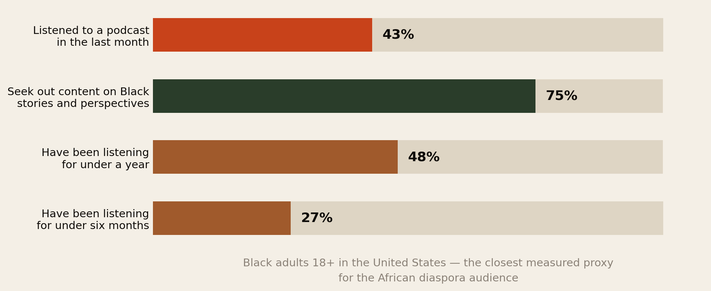
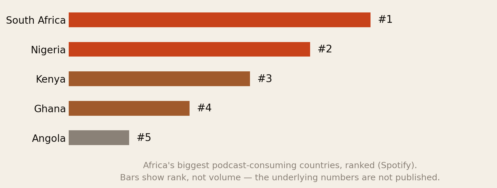
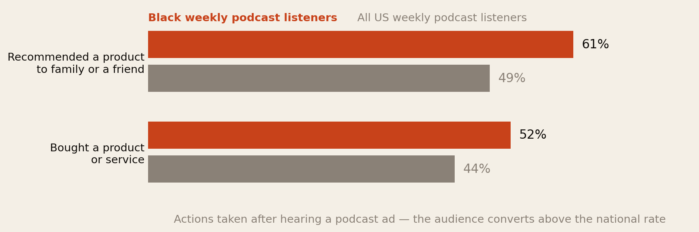
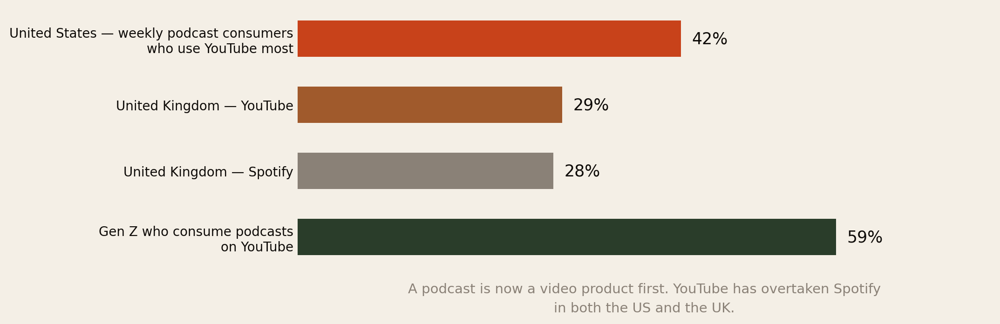
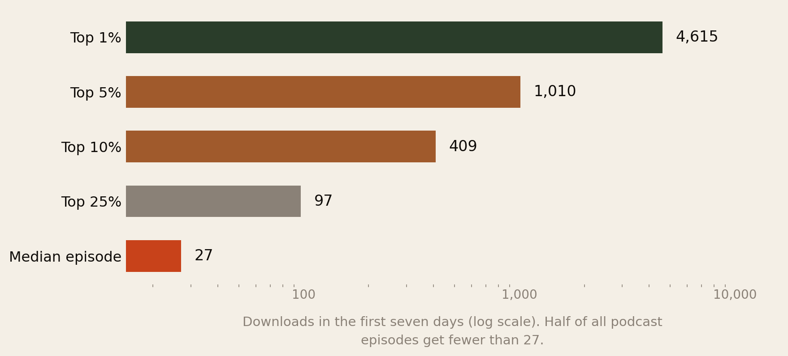
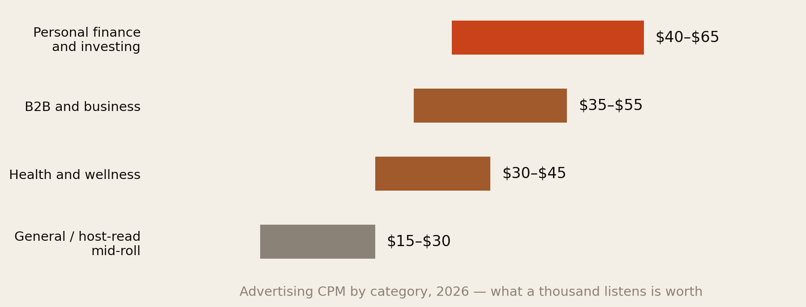

Everybody Is Talking. Nobody Is Answering.
The diaspora podcast audience is large, unusually commercially valuable, and mostly less than a year old. The diaspora podcast shelf is culture, comedy and relationships. This report maps what exists, gives the honest numbers on what a show can expect, and names nine subjects we went looking for and could not find anyone covering.
Section 01The Short Version
This report exists because a member of this network asked a practical question: is there room for another diaspora podcast, and if so, where? The answer is yes, and the room is not where most people look for it.
- The audience is large and young in the format. 43% of Black adults in the United States listened to a podcast in the last month, and 75% of monthly listeners actively seek out content on Black stories and perspectives. Nearly half — 48% — have been listening for under a year.
- It converts unusually well. 61% of Black weekly listeners recommended a product after hearing about it on a podcast, against 49% of US weekly listeners generally; 52% bought something, against 44%. Advertisers notice this.
- It is a video product now. YouTube is the most-used podcast service, at about 42% of weekly consumers in the US. In the UK it has overtaken Spotify for the first time (29% vs 28%). Among Gen Z, 59% consume podcasts on YouTube. Audio-only is a decision to be smaller.
- The download reality is brutal and worth knowing before you start. The median podcast episode gets 27 downloads in its first seven days. The top 10% gets 409. The top 1% gets 4,615. Most shows do not fail loudly; they fail quietly at 27.
- Money follows subject, not just size. General host-read advertising runs about $15–30 CPM. Personal finance and investing runs $40–65. A small show about money can out-earn a large show about vibes.
- And the shelf is lopsided. Diaspora podcasting is well supplied with culture, comedy, dating, identity, faith and founder interviews. We searched for shows covering the practical questions this network’s own research says the diaspora is actually asking — visas, credential recognition, the earnings gap, remittances, building from abroad, returning — and did not find them.
- Two structural gaps are enormous. Roughly 6.9 million Africans live in Asia and the Gulf — a third of the entire diaspora — and we found no podcast serving them. Francophone and Lusophone African diasporas are similarly thin, in a market where almost everything is in English.
The diaspora is well served for company and badly served for answers. That is the opening.
Section 02The Audience Is Real, and It Is New

Two numbers here matter more than the headline.
The first is 75% — the share of Black monthly listeners who actively seek out content focused on Black stories and perspectives. That is not passive availability. That is demand expressing itself as search behaviour, which is the condition under which a new show can actually be found.
The second is 48% listening for under a year, 27% for under six months. This audience is not settled. In a mature market the incumbents own the habit and a new entrant fights for switching. Here, half the audience arrived recently and has not yet decided what it listens to. That window does not stay open indefinitely.
On the continent, the picture is consistent. South Africa, Nigeria, Kenya, Ghana and Angola are Africa’s biggest podcast-consuming countries, and Kenya, Nigeria and South Africa each carry over a thousand active shows. Reported podcast penetration in several African and Middle Eastern markets runs above 75%, though those figures should be treated cautiously.

One characteristic of African podcasting distinguishes it sharply from the US and European markets, and it is worth knowing if you are planning a show: audiences and creators skew female, where the Western podcast market skews male. That shapes what already works and what an incoming show is competing with.
Section 03It Converts Better Than Average

This is the single most commercially important fact in the report, and it is the one least discussed by people starting shows.
Black weekly podcast listeners act on advertising at rates roughly a quarter higher than the national average — 61% against 49% on recommendation, 52% against 44% on purchase. In an advertising market that buys on cost per thousand, an audience that converts at 1.25× the base rate is worth more than its size suggests.
What that means practically: you do not need a large show to have a sellable one. The pitch to an advertiser is not “I have 50,000 listeners.” It is “I have 4,000 listeners in a demographic that converts a quarter better than your existing buy, and nobody else is selling access to them.” That is a stronger position than raw scale, and it is available immediately.
Section 04It Is a Video Product Now

If you take one operational decision from this report, take this one. YouTube is now the most-used podcast platform, at roughly 42% of weekly podcast consumers in the United States. In the UK it has overtaken Spotify for the first time on record. Among Gen Z the figure is 59%.
In the US, 51% of people aged 12+ have watched a podcast, against 70% who have listened. Video is no longer the promotional afterthought; for a large share of the audience it is the product.
Three consequences for a new diaspora show:
- Launching audio-only is choosing to be smaller. It is a legitimate choice with real cost savings, but it should be a decision, not an oversight.
- YouTube is a search engine. That matters enormously for the gap this report identifies: nobody searches YouTube for “three friends chatting.” People search it for “how do I get my nursing qualification recognised in the UK.” A practical show is discoverable in a way a conversational one is not.
- Distribution on the continent is a separate problem. African podcasting has a documented structural obstacle in that dedicated podcast apps are not reliably pre-installed on Android handsets. If part of your audience is on the continent rather than in the diaspora, YouTube and WhatsApp matter more than Apple Podcasts.
Section 05What Already Exists
The diaspora podcast scene is not empty. It is concentrated.
At the top, the shows are real businesses with real reach. The Receipts, hosted by British-Nigerian and British-Ghanaian women, reports over 100,000 weekly listens across 71 countries, and moved from independent to BBC Radio 1Xtra to Spotify. I Said What I Said, running from Lagos since 2017, is routinely described as one of Africa’s biggest podcasts and is now in its eighth season.
Below them sits a wide field of diaspora shows — Afros in the Diaspora, Conversations from the Diaspora, The New African Diasporas Podcast and many others — covering immigration as emotional transition, identity, family expectation, generational difference, and the stigma around therapy in African and immigrant communities.
That work is good and it is needed. But look at the shape of it. Nearly all of it belongs to one broad category: the experience of being African abroad, discussed. Culture, comedy, dating, identity, mental health, faith, and interviews with founders.
What is almost entirely absent is the other category: the mechanics of being African abroad, explained.
Section 06The Ten That Matter
There is no published ranking of African and African-origin podcasts by diaspora listenership. Nobody measures it. What follows is our own list, assembled from published figures, platform signals and editorial prominence, and it is a considered list rather than a measured chart — see Method & Limits before you quote the order.
The first thing it shows is not what most people expect.
![Two-tier list. Tier one, global general-interest: The Diary of a CEO by Steven Bartlett, born Gaborone Botswana, 120 million-plus downloads and streams a month; What Now? with Trevor Noah, South Africa, a Spotify Studios original with figures not published. Tier two, made for the diaspora: The Receipts in London, 100,000-plus weekly listens across 71 countries; I Said What I Said in Lagos, eighth season; Tea With Tay in Lagos, reported at over a million listeners; The Honest Bunch in Lagos, 4.7 out of 5 from 661 Apple ratings.](img/two_tiers.png)
The two biggest podcasters of African origin on earth do not make African podcasts.
The Diary of a CEO takes over 120 million downloads and streams a month and was ranked the second most popular podcast in the world in Spotify’s 2025 Wrapped. Its host, Steven Bartlett, was born in Gaborone, Botswana and raised in England. Trevor Noah, South African, hosts a Spotify Studios original. Neither show is about being African abroad. They are business and general-interest shows that happen to be hosted by men of African origin.
Everything else operates roughly two orders of magnitude below that.
| # | Show | Host & base | What is documented |
|---|---|---|---|
| 1 | The Diary of a CEO | Steven Bartlett · born Botswana, based London | 120m+ downloads and streams monthly; #2 globally on Spotify Wrapped 2025; 12.1m YouTube subscribers |
| 2 | What Now? with Trevor Noah | Trevor Noah · South Africa, based US | Spotify Studios original; no listener figures published |
| 3 | The Receipts | Tolani Shoneye, Audrey Indome · London | 100,000+ weekly listens across 71 countries; independent → BBC 1Xtra → Spotify |
| 4 | I Said What I Said | Jollz and FK Abudu · Lagos | Running since 2017, eighth season; widely described as one of Africa’s biggest |
| 5 | Tea With Tay | Taymesan Emmanuel · Lagos | Reported at over a million listeners; episodes routinely go viral |
| 6 | The Honest Bunch | Nedu and co-hosts · Glitch Africa, Lagos | 4.7/5 from 661 Apple ratings; ~134-minute episodes; video-first |
| 7 | 3 Shots of Tequila | Marvin Abbey, Tazer Black · London | 200+ episodes; Spotify-exclusive; Black London culture |
| 8 | The Afrobeats Podcast | Adesope Olajide · London | The reference show for Afrobeats industry conversation |
| 9 | Sincerely Accra | GCR Production · Accra | The most prominent Ghanaian entry; part of a small network |
| 10 | The diaspora-specific tier | Afros in the Diaspora, Conversations from the Diaspora, The New African Diasporas Podcast | Small but the only shows explicitly about migration, identity and adjustment |
Three things follow from that list, and all three matter if you are thinking of starting something.
- The ceiling is enormous and it has already been reached. An African-origin host runs the second-biggest podcast on the planet. Nobody needs to argue that this audience or these hosts can scale. The question is only what the show is about.
- The route to that ceiling was not diaspora content. Both tier-one shows are general-interest. That is worth sitting with: the largest African-origin podcast successes were built by not narrowcasting. It is the strongest available counter-argument to this report’s own thesis, and we would rather state it than hide it.
- Tier two is almost entirely Lagos and London. Eight of the ten entries are based in one of two cities. There is nothing from the Gulf, nothing Francophone, nothing from East Africa in the top tier, and nothing serving the second generation as adults. The geographic concentration mirrors the subject concentration exactly.
Two cities, one language, and one broad subject. That is what the top of this market currently looks like — which is either discouraging or the whole opportunity, depending on what you were planning to make.
Section 07The Honest Numbers
Before the opportunity, the reality check. If you are going to spend a year of evenings on this, you should know the base rates.

The median podcast episode receives 27 downloads in its first seven days. Not 27,000. Twenty-seven. Reaching 97 puts you in the top quarter of all podcasts. Reaching 409 puts you in the top tenth.
This cuts both ways, and both are worth internalising:
- The discouraging half. Podcasting has almost no barrier to entry and therefore enormous attrition. Most shows are heard by a few dozen people and stop within a year. If your plan requires 50,000 listeners to work, your plan will not work.
- The encouraging half. The bar for being a genuinely significant show is far lower than people assume. A few hundred engaged listeners is top-decile. A thousand is top 5%. For a specific, underserved, commercially attractive audience, that is achievable, and it is enough to sell.
You are not competing with Joe Rogan. You are competing with 27.
Section 08What a Thousand Listens Is Worth

Advertising is sold on CPM — cost per thousand listens. General host-read mid-roll advertising runs about $15–30. Personal finance and investing shows command $40–65. Business and B2B shows sit at $35–55.
Do the arithmetic, because it inverts the usual assumption. A comedy show with 10,000 listens an episode at $20 CPM earns roughly $200 per ad slot. A money show for the diaspora with 3,000 listens at $55 CPM earns roughly $165 — from less than a third of the audience.
And the second show has a structural advantage the first does not: its subject matter matches the advertisers who most want this audience. Remittance companies, digital banks, currency services, immigration law firms, credential-evaluation services, diaspora mortgage products, insurers. Those are endemic advertisers for a diaspora money show and irrelevant to a comedy show.
Two practical thresholds. Most direct sponsorships become viable around 5,000 downloads per episode; some ad networks will work with shows from around 500. But the more useful principle is the one the industry states plainly: a thousand dedicated listeners in a valuable niche is easier to sell than ten thousand disengaged ones.
Section 09The Gap
Here is where this report can do something most market analyses cannot. Africa Global Forum has spent 2026 publishing research on what Africans abroad actually need to know — eleven fact-checked reports on visas, migration destinations, earnings gaps, credential recognition, remittances, property, intermarriage and investment failure.
Those reports are, in effect, a documented map of diaspora information demand. Set that against the podcast supply described in Sections 05 and 06 and the mismatch is stark.
![Two-column comparison. Well served: culture comedy and banter; dating and relationships; identity and belonging; Afrobeats and entertainment; mental health and therapy; faith; founder interviews. We could not find a show doing this: visas status and the cost of staying legal; getting your qualification recognised; the earnings gap and how to close it; sending money home without losing it; buying land and building from abroad; returning retiring and where to grow old; the Gulf, a third of the diaspora; Francophone and Lusophone Africa abroad; the second generation as adults.](img/supply_gap.png)
The pattern is consistent enough to state as a rule. Diaspora podcasting covers how it feels. It does not cover how it works.
That is not a criticism of the existing shows, which are doing what they set out to do and doing it well. It is an observation about where an entrant has room. Every one of the subjects in the right-hand column has three properties an incoming show wants: documented demand, no incumbent, and endemic advertisers with money.
Section 10Nine Territories Nobody Is Working
Each of these is a show. Each has a named audience, a specific question, and an evidence base that already exists in this library.
| The territory | The demand evidence | Who would advertise |
|---|---|---|
| 1. Status and the cost of staying legal Visas, renewals, settlement clocks, what each step costs | Fees across 26 countries; the UK is shortening its post-study window in January 2027 (The Visa Treadmill) | Immigration law firms, relocation services, insurers |
| 2. Getting your qualification recognised Requalification, conversion, the paperwork nobody explains | 41.4% of non-EU citizens in the EU work below their qualification level (The Diaspora, Counted) | Credential evaluators, exam providers, universities |
| 3. The earnings gap, and closing it Negotiation, sector switching, promotion | 26.1% pay gap for sub-Saharan African workers against 9.0% for European arrivals (How Long Until It Was Worth It?) | Recruiters, professional bodies, training |
| 4. Money home without losing it Corridors, spreads, what actually lands | Sending $200 to sub-Saharan Africa costs 8.78% against a 3% UN target (You Sent the Money) | Remittance firms, neobanks, FX services — high-CPM fintech |
| 5. Building and buying from abroad Title, escrow, supervision, contractors | ~10% of rural African land is formally documented; 56,000 abandoned projects in Nigeria alone | Developers, property lawyers, escrow platforms, surveyors |
| 6. Going back Return, retirement, healthcare, where to grow old | Between 20% and 50% of immigrants leave within five years; 75% in the Netherlands | Pensions, health insurance, relocation, property |
| 7. The Gulf Contract work, rights, remitting, exit | 6.9 million Africans in Asia and the Gulf — a third of the diaspora | Remittance firms, recruiters, legal services |
| 8. Francophone and Lusophone Africa abroad The same questions, in French and Portuguese | France is the largest single host of African students; the market is almost entirely anglophone | Everything above, with no competition |
| 9. The second generation, as adults Inheritance, dual identity, obligations, going “back” to somewhere you never lived | Migrant-stock data misses them entirely; the Nigerian-ancestry population in the US is 60% larger than the Nigerian-born one | Financial services, travel, education |
If you want the single strongest commercial pick from that list, it is number four. It combines the highest-CPM advertising category in podcasting with the most universal diaspora activity, and the audience is already spending money on the exact products that would sponsor it.
If you want the strongest strategic pick — the one where you could own the category outright for years — it is number seven or number eight, for the reasons in the next two sections.
Section 11The Gulf, Again
This is the third AGF report in a row to arrive at the same blind spot from a different direction, which is usually a sign the blind spot is real.
Roughly 6.9 million Africans live in Asia and the Gulf — about a third of the 20.7 million living outside the continent, and more than double the number in North America. Our music report found no Gulf presence anywhere in the African music economy. This one searched for podcasts serving that population and did not find them either.
We want to be careful about what that means. Our search was in English, from outside the region, using Western podcast directories. There may well be Arabic, Amharic, Somali, Tigrinya or Swahili-language shows we simply could not see, and we would genuinely like to be corrected on this. But an audience of nearly seven million people that is invisible to standard discovery is, either way, an underserved audience.
The commercial logic is unusually clean. Gulf-based African workers are overwhelmingly remitters — that is frequently the entire purpose of the migration — which makes them the single most attractive audience on earth for remittance and financial-services advertisers. They also have acute, unmet information needs around contracts, sponsorship rules, wage protection and exit.
A third of the diaspora, an obvious advertiser base, and no incumbent. If that is not whitespace, nothing is.
The honest counterweight: this is also the hardest of the nine to execute. Discretionary income is lower, listening may be on cheaper devices and constrained data, and some subject matter is politically sensitive in the countries where the audience lives. It is whitespace because it is difficult, not because nobody noticed.
Section 12The Language Gap
Almost everything described in this report is in English. That reflects the market, and it is a strange fact about a continent where France hosts the largest single population of African students and where French, Portuguese and Arabic are the working languages of a very large share of the diaspora.
Our searches surfaced a handful of relevant French-language shows — work on Françafrique, on Kenyan experience in France, on African studies — but nothing resembling the practical diaspora-service podcast this report is describing, in any language other than English.
For anyone who works comfortably in French or Portuguese, that is the lowest-competition entry point in this entire analysis. The diaspora questions are identical — residence permits, credential recognition, remittances, property — and the answers differ mainly in jurisdiction. The research burden is real; the competitive burden is close to zero.
Section 13If You Are Starting One
- Pick a question, not a topic. “Diaspora life” is a topic and it is taken. “How much does it cost to bring your mother to live with you, and can you?” is a question, and it is searchable, answerable and sponsorable.
- Publish on YouTube from episode one, even if the video is unglamorous. It is where 42% of the audience is and it is the only platform where a title answering a specific question gets found by someone who was not looking for you.
- Build for search, not for the feed. Episode titles should be the questions people type. A practical show accumulates an audience for years from episodes published once; a conversational show is only as big as its last week.
- Aim for the top decile, not for fame. 409 downloads in week one is a genuinely successful show. Set that as the target and it is reachable within a year.
- Sell the conversion rate, not the download count. Fig 3 is your media kit. Lead with the fact that this audience acts on advertising a quarter more often than the national average.
- Get a guest with the actual answer. The differentiator for a practical show is not charisma, it is access — the immigration solicitor, the credential assessor, the person who did the requalification. That is a network problem, which is exactly what this Forum is for.
- Do not price it as a hobby that might make money. Ten to twenty episodes in a specific vertical is a sellable asset well before it is a large show.
- Expect the first year to be quiet. Half of all episodes get under 27 downloads. Consistency is the entire strategy, because most competitors stop.
Section 14The Format Decision
One structural choice determines most of the rest, and it is worth making deliberately.
- The conversation show — two or three friends, weekly, personality-led. Cheap, enjoyable, and the most crowded part of the market. It lives on relationship with the hosts, which takes years to build and cannot be searched for. This is what most people start and it is why most people stop.
- The service show — one question per episode, answered properly, usually with a guest who has the credential. Harder to make, requires actual research, and is the format this report’s evidence points at. It compounds: an episode answering “how do I get a Nigerian medical degree recognised in Canada” is still being found in three years.
- The narrative show — produced, reported, documentary-style. Highest quality ceiling, highest cost, hardest to sustain independently. African examples exist and win awards; very few sustain themselves commercially.
Given the gap in Fig 8 and the CPM structure in Fig 7, the service format is where the unclaimed ground is. It is also, conveniently, the format that suits someone whose advantage is a network and a research library rather than a stand-up act.
Section 15The Uncomfortable Part
First, most podcasts fail, and the reason is usually consistency rather than quality. The evidence is unambiguous that shows stop. A podcast is a weekly obligation for years, and the median outcome is 27 downloads and a quiet ending after eleven episodes. Anyone starting should plan for a year of near-silence and decide in advance whether they will keep going through it.
Second, the gap may be a gap for a reason. We have argued that nobody is making practical diaspora shows. The honest alternative explanation is that people have tried and found that audiences say they want practical information and actually listen to entertainment. We found no evidence either way. The counter-evidence is the 75% seeking-out figure and the fact that these questions get thousands of views when answered on YouTube by immigration lawyers and accountants — just not in podcast form.
Third, this audience deserves better than engagement bait. A show about visas, money and qualifications is a show where being wrong has consequences for people’s lives. The reason the existing service content is thin is partly that it is genuinely hard to do responsibly — rules change, jurisdictions differ, and “I heard it on a podcast” is a bad basis for a visa decision. If you take the gap, take the obligation that comes with it.
Section 16Method & Limits
This report assembles published audience, platform and industry figures as at 18 August 2026 and sets them against a manual review of the diaspora podcast field.
- “We could not find a show doing this” is not “no show exists.” Fig 8 and Section 10 rest on searches conducted in English through Western podcast directories and search engines. Podcast discovery is genuinely poor, small shows are close to invisible, and we will certainly have missed things. Treat the right-hand column as an absence of visible supply — which is what matters commercially anyway — rather than proof of a vacuum.
- Section 06 is a considered list, not a measured ranking. No published data ranks African or African-origin podcasts by diaspora listenership, so we built the list from published figures, platform prominence and editorial visibility. The metrics differ between entries — monthly downloads, weekly listens, ratings counts, episode totals — and are not comparable, which is why the table reports what each show has actually disclosed rather than forcing a single number. The order below the top two should be read as a grouping, not a league table, and shows without public figures are certainly under-represented.
- Host origin is stated as reported. We describe where hosts were born or are based, using published biographical sources. We have not attempted to characterise anyone’s identity beyond that, and inclusion here is a statement about audience and origin, not a claim about how any host describes themselves.
- The audience data is about Black Americans, not the African diaspora. The Edison figures in Fig 1 and Fig 3 measure Black US adults 18+. That population overlaps with the African diaspora but is mostly not it. We use it because it is the best-measured proxy available and no equivalent study of the African diaspora specifically exists. This is a real limitation, and it means the numbers describe an adjacent audience rather than yours.
- Download benchmarks come from one hosting platform. Buzzsprout’s data reflects its own customer base, which skews toward independent and smaller shows. The true median across all podcasts is probably lower still; the percentile ladder is directionally sound rather than exact.
- CPM figures vary widely by source and depend on whether they are buy-side or sell-side, host-read or programmatic, and whether the show sells directly or through a network. Treat Fig 7 as a ranking of categories, not a rate card.
- African podcast market projections are forecasts from commercial research firms and we have not relied on them for any conclusion. The Africa listening ranking in Fig 2 has no published volumes attached, which is why it is drawn as a rank.
- The demand column in Section 10 is our own research library, which is a defensible but not neutral source. It reflects what we chose to investigate. It is evidence that these questions have answers worth publishing, not proof that a podcast audience exists for each of them.
- We have not surveyed anyone. There is no primary audience research in this report. A hundred conversations with actual listeners would be worth more than everything here, and remains the obvious next step for anyone serious.
- Named shows are cited as illustrations, not as an exhaustive or ranked list, and reported listener figures are those the shows or platforms have published themselves.
Principal sources: Black Podcast Listener Report (Edison Research, SXM Media, Mindshare USA); Edison Research on YouTube as the preferred podcast service and Edison Podcast Metrics UK; Buzzsprout on download benchmarks; MillionPodcasts and industry rate guides on CPM; Reuters Institute on African podcasting economics; Spotify via Vanguard on African listening rankings; Rephonic and BBC reporting on named shows; published figures for The Diary of a CEO and Spotify Wrapped 2025 rankings. Demand evidence throughout is drawn from AGF’s own report library.
Companion reports: You Sent the Money. Did You Buy Anything? and How Long Until It Was Worth It?
The diaspora helps the diaspora.
Africa Global Forum is a peer network for Africans abroad — help each other, sit together, and bounce ideas. This research is part of an open library, free to read and share.